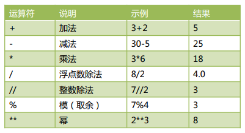

SXT课堂笔记¶
Python入门¶
Python介绍¶
简介¶
Python 是一种解释型、面向对象的语言。由吉多·范·罗苏姆（Guido van Rossum）于1989 年发明，1991 年正式公布。官网：https://www.python.org/
Python 单词是“大蟒蛇”的意思。但是龟叔不是喜欢蟒蛇才起这个名字，而是正在追剧：英国电视喜剧片《蒙提·派森的飞行马戏团》(Monty Python and the Flying Circus)。

特点¶
- 可读性强
可读性远比听上去重要的多得多。一个程序会被反复的修改，可读性强意味着让你可以在更短时间内学习和记忆，直接提高生产率。 - 简洁，简洁，简洁
研究证明，程序员每天可编写的有效代码数是有限的。完成同样功能只用一半的代码，其实就是提高了一倍的生产率。
Python 是由 C 语言开发，但是不再有 C 语言中指针等复杂数据类型，Python 的简洁性让开发难度和代码幅度大幅降低，开发任务大大简化。程序员再也不需要关注复杂的语法，而是关注任务本身。 - 面向对象
- 免费和开源
- 可移植性和跨平台
Python 会被编译成与操作系统相关的二进制代码，然后再解释执行。这种方式和java 类似，大大提高了执行速度，也实现了跨平台。 - 丰富的库（丰富的标准库， 多种多样的扩展库）
- 可扩展性。 可嵌入到 C 和 C++语言。 胶水式语言。
应用范围¶
- 科学计算
- 人工智能
- WEB 服务端和大型网站后端。
YouTube、gmail 等应用基于 python 开发。 - GUI 开发（图形用户界面开发）
- 游戏开发
- 移动设备
- 嵌入式设备
- 系统运维
- 大数据
- 云计算
Python 解释器¶
Python 程序的执行依赖于 Python 解释器。常用的 Python 解释器有：
-
CPython
使用 c 语言实现的解释器，最常用的解释器。通常说的解释器指的就是它。 -
Jython
使用 java 语言实现的解释器。Jython 可以直接调用 java 类库，适合在 java 平台上开发 -
IronPython
.NET 平台上使用的解释器。可直接调用.NET 平台的类，适合.NET 平台上开发 -
PyPy
使用 Python 语言实现的解释器
Python开发入门¶
Python 下载安装和配置¶
- 进入官网
- 下载
- 安装（和安装一般软件区别不大）
- 环境变量问题
勾选：“Add Python to environment variable”。 这样就会将 Python 添加到环境
变量 Path 中，我们可以在 windows 的命令行模式下运行 Python 解释器。

Python 开发环境¶
开发环境，英文是 IDE（Integrated Development Environment 集成开发环境）。
不要纠结于使用哪个开发环境。开发环境本质上就是对 Python 解释器 python.exe 的封装，核心都一样。可以说：“开发环境 IDE，只是解释器的一个外挂而已”，只是为了让程序员更加方便编程，减少出错率，尤其是拼写错误。
常用的开发环境如下：
- IDLE
- Pycharm
- wingIDE
- Eclipse
- IPython
交互模式(脚本 shell 模式)¶
- 进入命令行窗口，输入：python

- “>>>"即为“提示符”
- 关闭交互窗口： (1) Ctrl+Z 和回车 (2) 输入 quit()命令 (3) 直接关闭命令行窗口
- 中断程序执行：ctrl+C
交互模式工作原理和 Python 处理文件的方式一样。除了一点：当你输入一些值时，交互模式会自动打印输出。Py 文件中则必须使用 print 语句。
IDLE 开发环境使用入门¶
IDLE 介绍¶
- IDLE 是 Python 的官方标准开发环境，Python 安装完后同时就安装了 IDLE。
- IDLE 已经具备了 Python 开发几乎所有功能（语法智能提示、不同颜色显示不同类型等等），也不需要其他配置，非常适合初学者使用。
- IDLE 是 Python 标准发行版内置的一个简单小巧的 IDE，包括了交互式命令行、编辑器、调试器等基本组件，足以应付大多数简单应用。
- IDLE 是用纯 Python 基于 Tkinter 编写，最初的作者正是 Python 之父 Guido van Rossum。
IDLE 实操¶
- 交互模式
启动 IDLE，默认就是进入交互模式。 - 编写和执行 Python 源文件
IDLE 常用快捷键¶
| 快捷键 | 说明 |
|---|---|
| Alt+N Alt+P | 查看历史命令上一条、下一条 |
| Ctrl+F6 | 重启 shell，以前定义的变量全部失效 |
| F1 | 打开帮助文档 |
| Alt+/ | 自动补全前面曾经出现过的单词 |
| Ctrl + [ Ctrl + ] | 缩进代码和取消缩进 |
| Alt+M | 打开模块代码，先选中模块，然后按下此快捷键，会帮你打开改模块的 py 源码供浏览 |
| Alt+C | 打开类浏览器，方便在源码文件中的各个方法体之间切换 |
| F5 | 运行程序 |
程序基本格式¶
- 恰当的空格，缩进问题
(1) 逻辑行首的空白（空格和制表符）用来决定逻辑行的缩进层次，从而用来决定语句的分组。
(2) 语句从新行的第一列开始。
(3) 缩进风格统一：- 每个缩进层次使用 单个制表符 或四个空格（IDE 会自动将制表符设置成 4 个空格）
- Python 用缩进而不是{}表示程序块
- Python 区分大小写
- 注释
(1) 行注释
每行注释前加#号。当解释器看到#，则忽略这一行#后面的内容
(2) 段注释
使用三个连续单引号（'''）。当解释看到'''，则会扫描到下一个'''，然后忽略他们之间的内容。
编程基本概念¶
Python 程序的构成¶

- Python 程序由模块组成。一个模块对应 python 源文件，一般后缀名是：.py。
- 模块由语句组成。运行 Python 程序时，按照模块中语句的顺序依次执行。
- 语句是 Python 程序的构造单元，用于创建对象、变量赋值、调用函数、控制语句等。
Python 文件的创建和执行¶
前面使用的交互式环境，每次只能执行一条语句；为了编写多条语句实现复杂的逻辑，本章开始我们通过创建 Python 文件，并执行该文件。
在 IDLE 环境中，我们可以通过 File→new 创建 Python 文件，并可以编辑该文件内容。我们也可以通过 File→save/save as 保存文件。一般保存成扩展名为 py 的文件。
需要执行编辑好的文件，可以用快捷键 F5 或者点击 Run→Run module。
代码的组织和缩进¶
很多编程语言通过字符(例如：花括号{})、关键字(例如：begain/end)来划分代码块。 同时，在配合代码的缩进增加可读性。“龟叔”设计 Python 语言时，直接通过缩进来组织代码块。“缩进”成为了 Python 语法强制的规定。
缩进时，几个空格都是允许的，但是数目必须统一。我们通常采用“四个空格”表示一个缩进。
同时，也要避免将“tab 制表符”或者 tab 与空格混合的缩进风格。目前，常用的编辑器一般设置成：tab 制表符就是 4 个空格。
Python 官方推荐的 PEP-8 代码风格详细说明，有兴趣的同学可以参考：
https://www.python.org/dev/peps/pep-0008/
使用注释#¶
注释是程序中会被 Python 解释器忽略的一段文本。程序员可以通过注释记录任意想写的内容，通常是关于代码的说明。
Python 中的注释只有单行注释，使用 # 开始直到行结束的部分。
>>> # 注释是个好习惯，方便自己方便他人
>>> a = [10,20,30] #生成一个列表对象，变量 a 引用了这个变量
使用\行连接符¶
一行程序长度是没有限制的，但是为了可读性更强，通常将一行比较长的程序分为多行。这时，我们可以使用\行连接符，把它放在行结束的地方。Python 解释器仍然将它们解释为同一行。
>>> a = [10,20,30,40,\
50,60,70,\
80,90,100]
>>> a
[10, 20, 30, 40, 50, 60, 70, 80, 90, 100]
>>> a = 'abcdefghijklmnopqrstuvwxyz'
>>> b = 'abcdefg\
hijklmn\
opqrst\
uvwxyz'
>>> a
'abcdefghijklmnopqrstuvwxyz'
>>> b
'abcdefghijklmnopqrstuvwxyz'
对象¶
Python 中，一切皆对象。每个对象由：标识（identity）、类型（type）、value（值）组成。
1. 标识用于唯一标识对象，通常对应于对象在计算机内存中的地址。使用内置函数 id(obj)可返回对象 obj 的标识。
2. 类型用于表示对象存储的“数据”的类型。类型可以限制对象的取值范围以及可执行的操作。可以使用 type(obj)获得对象的所属类型。
3. 值表示对象所存储的数据的信息。使用 print(obj)可以直接打印出值。
对象的本质就是：一个内存块，拥有特定的值，支持特定类型的相关操作。
源码：
>>> a = 3
>>> a
3
>> id(3)
1531372336
>>> type(3)
<class 'int'>
>>> b = "我爱你"
>>> id(a)
1531372336
>>> type(a)
<class 'int'>
>>> print(a)
3
>> id(b)
46806816
>>> type(b)
<class 'str'>

引用¶
在 Python 中，变量也称为：对象的引用。因为，变量存储的就是对象的地址。
变量通过地址引用了“对象”。
变量位于：栈内存（压栈出栈等细节，后续再介绍）。
对象位于：堆内存。
- Python 是动态类型语言
变量不需要显式声明类型。根据变量引用的对象，Python 解释器自动确定数据类型。 - Python 是强类型语言
每个对象都有数据类型，只支持该类型支持的操作。

标识符¶
基本用法¶
标识符：用于变量、函数、类、模块等的名称。标识符有如下特定的规则：
- 区分大小写。如：sxt 和 SXT 是不同的
- 第一个字符必须是字母、下划线。其后的字符是：字母、数字、下划线
- 不能使用关键字。比如：if、or、while 等。
- 以双下划线开头和结尾的名称通常有特殊含义，尽量避免这种写法。比如：__init__是类的构造函数。
【操作】使用 Python 帮助系统查看关键字
>>> help()
help> keywords
False def if raise
None del import return
True elif in try
and else is while
as except lambda with
assert finally nonlocal yield
break for not
class from or
continue global pass
Python 标识符命名规则¶
开发中，我们通常约定俗称遵守如下规则：
| 类型 | 规则 | 例子 |
|---|---|---|
| 模块和包名 | 全小写字母，尽量简单。若多个单词之间用下划线 | math, os, sys |
| 函数名 | 全小写字母，多个单词之间用下划线隔开 | phone, my_name |
| 类名 | 首字母大写，采用驼峰原则。多个单词时，每个单词第一个字母大写，其余部分小写 | MyPhone、MyClass、Phone |
| 常量名 | 全大写字母，多个单词使用下划线隔开 | SPEED、MAX_SPEED |
变量和简单赋值语句¶
变量的声明和赋值¶
变量的声明和赋值用于将一个变量绑定到一个对象上，格式如下：
变量名 = 表达式
最简单的表达式就是字面量。比如：a = 123 。 运行过程中，解释器先运行右边的表达式，生成一个代表表达式运算结果的对象；然后，将这个对象地址赋值给左边的变量。
【操作】变量在使用前必须先被初始化（先被赋值）
>>> my_name
Traceback (most recent call last):
File "<pyshell#17>", line 1, in <module>
my_name
NameError: name 'my_name' is not defined
删除变量和垃圾回收机制¶
可以通过 del 语句删除不在使用的变量。
【操作 55】删除变量示例
>>> x=123
>>> del x
>>> x
Traceback (most recent call last):
File "<pyshell#20>", line 1, in <module>
x
NameError: name 'x' is not defined
链式赋值¶
链式赋值用于同一个对象赋值给多个变量。
x=y=123 相当于：x=123; y=123
系列解包赋值¶
系列数据赋值给对应相同个数的变量（个数必须保持一致）
a,b,c=4,5,6 相当于：a=4;b=5;c=6
【操作】使用系列解包赋值实现变量交换
>>> a,b=1,2
>>> a,b=b,a
>>> print(a,b)
2 1
常量¶
Python 不支持常量，即没有语法规则限制改变一个常量的值。我们只能约定常量的命名规则，以及在程序的逻辑上不对常量的值作出修改。
>>> MAX_SPEED = 120
>>> print(MAX_SPEED)
120
>>> MAX_SPEED = 140 #实际是可以改的。只能逻辑上不做修改。
>>> print(MAX_SPEED)
140
基本内置数据类型和运算符¶
每个对象都有类型，python 中最基本的内置数据类型：
- 整型
整数，2345,10,50 - 浮点型
小数，3.14 或者科学计数法 314e-2 - 布尔型
表示真假，仅包含：True、False - 字符串型
由字符组成的序列。 “abc”,”sxt”,“尚学堂”,”百战程序员”
数字和基本运算符¶
Python 支持整数(如：50,520)和浮点数(如：3.14,10.0, 1.23e2)，我们可以对数字做如下运算。

【操作】基本运算符的使用
>>> a = 7/2
>>> a
3.5
>>> a = 7//2
>>> a
3 >
>> a = 7%2
>>> a
1
>> 7%4
3
>> 2**3
8 >
>> 3/0
Traceback (most recent call last):
File "<pyshell#37>", line 1, in <module>
3/0
ZeroDivisionError: division by zero
>>> divmod(10,5)
(2, 0)
>>> divmod(10,3)
(3, 1)
>>> 3/0
Traceback (most recent call last):
File "<pyshell#31>", line 1, in <module>
3/0
ZeroDivisionError: division by zero
>>> divmod(13,3)
(4, 1)
整数¶
Python 中，除 10 进制，还有其他三种进制：
- 0b 或 0B，二进制 0 1
- 0o 或 0O，八进制 0 1 2 3 4 5 6 7
- 0x 或 0X，十六进制 0 1 2 3 4 5 6 7 8 9 a b c d e f
这三种进制可以非常方便的进行“位运算”操作。位运算知识后续将会介绍。
【操作】测试不同进制
>>> 12
12
>>> 0b101
5
>> 0o19
SyntaxError: invalid syntax
>>> 0o10
8
>> 0xff
255
>>> 0xf
15
>>> 0x10
16
使用 int()实现类型转换：
- 浮点数直接舍去小数部分。如：int(9.9)结果是：9
- 布尔值 True 转为 1，False 转为 0。 如：int(True)结果是 1
- 字符串符合整数格式（浮点数格式不行）则直接转成对应整数，否则报错。
>>> int("456")
456
>>> int("456abc")
Traceback (most recent call last):
File "<pyshell#41>", line 1, in <module>
int("456abc")
ValueError: invalid literal for int() with base 10: '456abc'
>>> int("456.78")
Traceback (most recent call last):
File "<pyshell#42>", line 1, in <module>
int("456.78")
ValueError: invalid literal for int() with base 10: '456.78'
>>>
整数和浮点数混合运算时，表达式结果自动转型成浮点数。比如：2+8.0 的结果是 10.0
整数可以有多大？
Python2 中，int 是 32 位，可以存储从-2147483648 到 2147483647 的整数（约±21 亿）。Long 类型是 64 位，可以存储：-263--263-1 之间的数值。
Python3 中，int 可以存储任意大小的整数，long 被取消。我们甚至可以存储下面的值：
>>> googol = 10**100
>>> googol
1000000000000000000000000000000000000000000000000
0000000000000000000000000000000000000000000000000
000
Googol 也是 Google 最初的名字，这也是 Google 最初的含义。
Python3 中可以做超大数的计算，而不会造成“整数溢出”，这也是 Python 特别适合科学运算的特点。
浮点数¶
浮点数，称为 float。
浮点数用 axb10 形式的科学计数法表示。比如：3.14，表示成：314E-2 或者 314e-2。
这些数字在内存中也是按照科学计数法存储。
类型转换和四舍五入¶
- 类似于 int()，我们也可以使用 float()将其他类型转化成浮点数。
- 整数和浮点数混合运算时，表达式结果自动转型成浮点数。比如：2+8.0 的结果是 10.0
- round(value)可以返回四舍五入的值
注：但不会改变原有值，而是产生新的值
增强型赋值运算符¶
运算符+、-、，/、//、* 和 % 和赋值符 = 结合可以构成“增强型赋值运算符”。
a = a + 1 等价于： a +=1

时间的表示¶
计算机中时间的表示是从“1970 年 1 月 1 日 00:00:00”开始，以毫秒（1/1000 秒）进行计算。我们也把 1970 年这个时刻成为“unix 时间点”。
这样，我们就把时间全部用数字来表示了。

python 中可以通过 time.time() 获得当前时刻，返回的值是以秒为单位，带微秒（1/1000 毫秒）精度的浮点值。例如：1530167364.8566。
>>> import time
>>> b = int(time.time())
>>> b
1530168754
>>> totalMinutes = b/60
>>> totalMinutes
25502812.566666666
>>> totalMinutes = b//60
>>> totalMinutes
25502812
>>> totalHours = totalMinutes//60
>>> totalHours
425046
>>> totalDays = totalHours//24
>>> totalDays
17710
>>> totalYears = totalDays//365
>>> totalYears
48
布尔值¶
Python2 中没有布尔值，直接用数字 0 表示 False,用数字 1 表示 True。
Python3 中，把 True 和 False 定义成了关键字，但他们的本质还是 1 和 0，甚至可以和数字相加。
>>> a = True
>>> b = 3
>>> a+b
4
比较运算符¶
所有比较运算符返回 1 表示真，返回 0 表示假。这分别与特殊的变量 True 和 False 等价。
逻辑运算符¶
同一运算符¶
同一运算符用于比较两个对象的存储单元，实际比较的是对象的地址。
is 与 == 区别：
is 用于判断两个变量引用对象是否为同一个，既比较对象的地址。
== 用于判断引用变量引用对象的值是否相等，默认调用对象的 eq()方法。
整数缓存问题¶
Python 仅仅对比较小的整数对象进行缓存（范围为[-5, 256]）缓存起来，而并非是所有整数对象。需要注意的是，这仅仅是在命令行中执行，而在 Pycharm 或者保存为文件执行，结果是不一样的，这是因为解释器做了一部分优化(范围是[-5,任意正整数])。
总结
- is 比较两个对象的 id 值是否相等，是否指向同一个内存地址；
- == 比较的是两个对象的内容是否相等，值是否相等；
- 小整数对象[-5,256]在全局解释器范围内被放入缓存供重复使用；
- is 运算符比 == 效率高，在变量和 None 进行比较时，应该使用 is。
【操作】同一运算符测试
>>> a = 1000
>>> b = 1000
>>> a == b
True
>>> a is b
False
>>> id(a)
46764560
>>> id(b)
46765216
>>> c = 10
>>> d = 10
>>> c is d
True
>>> id(c)
1388831648
>>> id(d)
1388831648
基本运算符¶
我们在前面讲解了“+”、“-”、“*”、“/”、“//”、“%”等运算符，这里我们继续讲解一些其他运算符，并进行学习和测试。
- 比较运算符可以连用，并且含义和我们日常使用完全一致。
>>> a = 4 >>> 3<a<10 #关系运算符可以连用 True - 位操作
>>> a = 0b11001 >>> b = 0b01000 >>> c = a|b >>> bin(c) #bin()可以将数字转成二进制表示 '0b11001' >>> bin(c&b) '0b1000' >>> bin(c^b) '0b10001' >>> a = 3 >>> a<<2 #左移 1 位相当于乘以 2.左移 2 位，相当于乘以 4 12 >>> a = 8 >>> a>>1 #右移 1 位相当于除以 2. - 加法操作
(1) 数字相加 3+2 == > 5
(2) 字符串拼接 “3”+“2”== > “32”
(3) 列表、元组等合并 [10,20,30]+[5,10,100] ==>[10,20,30,5,10,100] - 乘法操作
(1) 数字相乘 3*2 ==> 6
(2) 字符串复制 “sxt”*3 ==> ”sxtsxtsxt”
(3) 列表、元组等复制 [10,20,30]*3 ==> [10,20,30,10,20,30,10,20,30]
复合赋值运算符¶
复合赋值可以让程序更加精炼，提高效率。

注：与 C 和 JAVA 不一样，Python 不支持自增(++)和自减(--)
运算符优先级问题¶
如下优先级，从高到低。
实际使用中，记住如下简单的规则即可，复杂的表达式一定要使用小括号组织。
- 乘除优先加减
- 位运算和算术运算 > 比较运算符 > 赋值运算符 > 逻辑运算符
字符串¶
字符串基本特点¶
很多人初学编程时，总是担心自己数学不行，潜意识里认为数学好才能编程。实际上，大多数程序员打交道最多的是“字符串”而不是“数字”。因为，编程是用来解决现实问题的，因此逻辑思维的重要性远远超过数学能力。
字符串的本质是：字符序列。Python 的字符串是不可变的，我们无法对原字符串做任何修改。但，可以将字符串的一部分复制到新创建的字符串，达到“看起来修改”的效果。
Python 不支持单字符类型，单字符也是作为一个字符串使用的。
字符串的编码¶
Python3 直接支持 Unicode，可以表示世界上任何书面语言的字符。Python3 的字符默认就是 16 位 Unicode 编码，ASCII 码是 Unicode 编码的子集。
使用内置函数 ord()可以把字符转换成对应的 Unicode 码；
使用内置函数 chr()可以把十进制数字转换成对应的字符。
>>> ord('A')
65
>>> ord('高')
39640
>>> chr(66)
'B'
>>> ord('淇')
28103
引号创建字符串¶
我们可以通过单引号或双引号创建字符串。例如：a=’abc’; b=”sxt”
使用两种引号的好处是可以创建本身就包含引号的字符串，而不用使用转义字符。例如：
>>> a = "I'm a teacher!"
>>> print(a)
I'm a teacher!
>>> b = 'my_name is "TOM"'
>>> print(b)
my_name is "TOM"
>>> resume = ''' name="gaoqi"
company="sxt" age=18
lover="Tom"'''
>>> print(resume)
name="gaoqi"
company="sxt" age=18
lover="Tom"
空字符串和 len()函数¶
Python 允许空字符串的存在，不包含任何字符且长度为 0。例如：
>>> c = ''
>>> len(c)
0
>>> d = 'abc 尚学堂'
>>> len(d)
6
转义字符¶
我们可以使用“+特殊字符”，实现某些难以用字符表示的效果。比如：换行等。常见的转义字符有这些：

【操作】测试转义字符的使用
>>> a = 'I\nlove\nU'
>>> a
'I\nlove\nU'
>>> print(a)
I
love
U
>>> print('aaabb\
cccddd')
aaabbcccddd
字符串拼接¶
- 可以使用 + 将多个字符串拼接起来。例如：’aa’+ ’bb’ ==>’aabb’。
(1) 如果+两边都是字符串，则拼接。
(2) 如果+两边都是数字，则加法运算。
(3) 如果+两边类型不同，则抛出异常。 - 可以将多个字面字符串直接放到一起实现拼接。例如：’aa’’bb’==>’aabb’
【操作】字符串拼接操作
>>> a = 'sxt'+'gaoqi'
>>> a
'sxtgaoqi'
>>> b = 'sxt''gaoqi'
>>> b
'sxtgaoqi'
字符串复制¶
使用*可以实现字符串复制。
【操作】字符串复制操作
>>> a = 'Sxt'*3
>>> a
'SxtSxtSxt'
不换行打印¶
我们前面调用 print 时，会自动打印一个换行符。有时，我们不想换行，不想自动添加换行符。我们可以自己通过参数 end = “任意字符串”。实现末尾添加任何内容：
建立源文件 mypy_06.py：
print("sxt",end=' ')
print("sxt",end='##')
print("sxt")
sxt sxt##sxt
从控制台读取字符串¶
我们可以使用 input()从控制台读取键盘输入的内容。
>>> myname = input("请输入名字:")
请输入名字:高淇
>>> myname
'高淇'
str()实现数字转型字符串¶
str()可以帮助我们将其他数据类型转换为字符串。例如：
str(5.20) == > ‘5.20’
str(3.14e2)== >’314.0’
str(True) == > ‘True’
当我们调用 print()函数时，解释器自动调用了 str() 将非字符串的对象转成了字符串。我们在面向对象章节中详细讲解这部分内容。
使用[]提取字符¶
字符串的本质就是字符序列，我们可以通过在字符串后面添加[]，在[]里面指定偏移量，可以提取该位置的单个字符。
正向搜索：
最左侧第一个字符，偏移量是 0，第二个偏移量是 1，以此类推。直到 len(str)-1为止。
反向搜索：
最右侧第一个字符，偏移量是-1，倒数第二个偏移量是-2，以此类推，直到-len(str)为止。
【操作】使用[]提取字符串中的字符
>>> a = 'abcdefghijklmnopqrstuvwxyz'
>>> a
'abcdefghijklmnopqrstuvwxyz'
>>> a[0]
'a'
>>> a[3]
'd'
>>> a[26-1]
'z'
>>> a[-1]
'z'
>>> a[-26]
'a'
>>> a[-30]
Traceback (most recent call last):
File "<pyshell#91>", line 1, in <module>
a[-30]
IndexError: string index out of range
replace()实现字符串替换¶
字符串是“不可改变”的，我们通过[]可以获取字符串指定位置的字符，但是我们不能改变字符串。我们尝试改变字符串中某个字符，发现报错了：
>>> a = 'abcdefghijklmnopqrstuvwxyz'
>>> a
'abcdefghijklmnopqrstuvwxyz'
>>> a[3]='高'
Traceback (most recent call last):
File "<pyshell#94>", line 1, in <module>
a[3]='高'
TypeError: 'str' object does not support item assignment
字符串不可改变。但是，我们确实有时候需要替换某些字符。这时，只能通过创建新的字符串来实现。
>>> a = 'abcdefghijklmnopqrstuvwxyz'
>>> a
'abcdefghijklmnopqrstuvwxyz'
>>> a = a.replace('c','高')
'ab 高 defghijklmnopqrstuvwxyz'
字符串切片 slice 操作¶
切片 slice 操作可以让我们快速的提取子字符串。标准格式为：
[起始偏移量 start：终止偏移量 end：步长 step]
典型操作(三个量为正数的情况)如下：
其他操作（三个量为负数）的情况：
切片操作时，起始偏移量和终止偏移量不在[0,字符串长度-1]这个范围，也不会报错。起始偏移量小于 0 则会当做 0，终止偏移量大于“长度-1”会被当成-1。例如：
>>> "abcdefg"[3:50]
'defg'
split()分割和 join()合并¶
split()可以基于指定分隔符将字符串分隔成多个子字符串(存储到列表中)。如果不指定分隔符，则默认使用空白字符(换行符/空格/制表符)。示例代码如下：
>>> a = "to be or not to be"
>>> a.split()
['to', 'be', 'or', 'not', 'to', 'be']
>>> a.split('be')
['to ', ' or not to ', '']
join()的作用和 split()作用刚好相反，用于将一系列子字符串连接起来。示例代码如下：
>>> a = ['sxt','sxt100','sxt200']
>>> '*'.join(a)
'sxt*sxt100*sxt200'
拼接字符串要点：
使用字符串拼接符+，会生成新的字符串对象，因此不推荐使用+来拼接字符串。推荐使用 join 函数，因为 join 函数在拼接字符串之前会计算所有字符串的长度，然后逐一拷贝，仅新建一次对象。
【操作】测试+拼接符和 join()，不同的效率 (mypy_07.py)
import time
time01 = time.time() #起始时刻
a = ""
for i in range(1000000):
a += "sxt"
time02 = time.time() #终止时刻
print("运算时间："+str(time02-time01))
time03 = time.time() #起始时刻
li = []
for i in range(1000000):
li.append("sxt")
a = "".join(li)
time04 = time.time() #终止时刻
print("运算时间："+str(time04-time03))
字符串驻留机制和字符串比较¶
字符串驻留：仅保存一份相同且不可变字符串的方法，不同的值被存放在字符串驻留池中。
Python 支持字符串驻留机制，对于符合标识符规则的字符串（仅包含下划线（_）、字母和数字）会启用字符串驻留机制驻留机制。
>>> a = "abd_33"
>>> b = "abd_33"
>>> a is b
True
>>> c = "dd#"
>>> d = "dd#"
>>> c is d
False
>>> str1 = "aa"
>>> str2 = "bb"
>>> str1+str2 is "aabb"
False
>>> str1+str2 == "aabb"
True
字符串比较和同一性¶
我们可以直接使用==,!=对字符串进行比较，是否含有相同的字符。
我们使用 is / not is，判断两个对象是否同一个对象。比较的是对象的地址，即 id(obj1)是否和 id(obj2)相等。
成员操作符¶
in /not in 关键字，判断某个字符(子字符串)是否存在于字符串中。
字符串常用方法汇总¶
字符串有很多常用的方法，我们需要熟悉。我们通过表格将这些方法汇总起来，方便大家查阅。希望大家针对每个方法都做一次测试。
常用查找方法¶
我们以一段文本作为测试：
a='''我是高淇,今年 18 岁了,我在北京尚学堂科技上班。我的儿子叫高洛希，他 6 岁了。我是一个编程教育的普及者，希望影响 6000 万学习编程的中国人。我儿子现在也开始学习编程，希望他 18 岁的时候可以超过我'''
| 方法和使用示例 | 说明 | 结果 |
|---|---|---|
| len(a) | 字符串长度 | 96 |
| a.startswith('我是高淇') | 以指定字符串开头 | True |
| a.endswith('过我') | 以指定字符串结尾 | True |
| a.find('高') | 第一次出现指定字符串的位置 | 2 |
| a.rfind('高') | 最后一次出现指定字符串的位置 | 29 |
| a.count("编程") | 指定字符串出现了几次 | 3 |
| a.isalnum() | 所有字符全是字母或数字 | False |
去除首尾信息¶
我们可以通过 strip()去除字符串首尾指定信息。通过 lstrip()去除字符串左边指定信息，rstrip()去除字符串右边指定信息。
【操作】去除字符串首尾信息
>>> "*s*x*t*".strip("*")
's*x*t'
>>> "*s*x*t*".lstrip("*")
's*x*t*'
>>> "*s*x*t*".rstrip("*")
'*s*x*t'
>>> " sxt ".strip()
'sxt'
大小写转换¶
编程中关于字符串大小写转换的情况，经常遇到。我们将相关方法汇总到这里。为了方便学习，先设定一个测试变量：
a = "gaoqi love programming, love SXT"
| 示例 | 说明 | 结果 |
|---|---|---|
| a.capitalize() | 产生新的字符串,首字母大写 | 'Gaoqi love programming, love sxt' |
| a.title() | 产生新的字符串,每个单词都首字母大写 | 'Gaoqi Love Programming, Love Sxt' |
| a.upper() | 产生新的字符串,所有字符全转成大写 | 'GAOQI LOVE PROGRAMMING, LOVE SXT' |
| a.lower() | 产生新的字符串,所有字符全转成小写 | 'gaoqi love programming, love sxt' |
| a.swapcase() | 产生新的,所有字母大小写转换 | 'GAOQI LOVE PROGRAMMING, LOVE sxt |
格式排版¶
center()、ljust()、rjust()这三个函数用于对字符串实现排版。示例如下：
>>> a="SXT"
>>> a.center(10,"*")
'***SXT****'
>>> a.center(10)
' SXT '
>>> a.ljust(10,"*")
'SXT*******'
其他方法¶
- isalnum() 是否为字母或数字
- isalpha() 检测字符串是否只由字母组成(含汉字)
- isdigit() 检测字符串是否只由数字组成
- isspace() 检测是否为空白符
- isupper() 是否为大写字母
- islower() 是否为小写字母
>>> "sxt100".isalnum()
True
>>> "sxt 尚学堂".isalpha()
True
>>> "234.3".isdigit()
False
>>> "23423".isdigit()
True
>>> "aB".isupper()
False
>>> "A".isupper()
True
>>> "\t\n".isspace()
True
字符串的格式化¶
format()基本用法¶
Python2.6 开始，新增了一种格式化字符串的函数 str.format()，它增强了字符串格式化的功能。
基本语法是通过 {} 和 : 来代替以前的 % 。
format 函数可以接受不限个参数，位置可以不按顺序。
我们通过示例进行格式化的学习。
>>> a = "名字是:{0},年龄是：{1}"
>>> a.format("高淇",18)
'名字是:高淇,年龄是：18'
>>> a.format("高希希",6)
'名字是:高希希,年龄是：6'
>>> b = "名字是：{0}，年龄是{1}。{0}是个好小伙"
>>> b.format("高淇",18)
'名字是：高淇，年龄是 18。高淇是个好小伙'
>>> c = "名字是{name}，年龄是{age}"
>>> c.format(age=19,name='高淇')
'名字是高淇，年龄是 19'
填充与对齐¶
填充常跟对齐一起使用
^、<、>分别是居中、左对齐、右对齐，后面带宽度
:号后面带填充的字符，只能是一个字符，不指定的话默认是用空格填充
>>> "{:*>8}".format("245")
'*****245'
>>> "我是{0},我喜欢数字{1:*^8}".format("高淇","666")
'我是高淇,我喜欢数字**666***'
数字格式化¶
浮点数通过 f，整数通过 d 进行需要的格式化。案例如下：
>>> a = "我是{0}，我的存款有{1:.2f}"
>>> a.format("高淇",3888.234342)
'我是高淇，我的存款有 3888.23'
其他格式，供大家参考：
可变字符串¶
在 Python 中，字符串属于不可变对象，不支持原地修改，如果需要修改其中的值，只能创建新的字符串对象。但是，经常我们确实需要原地修改字符串，可以使用 io.StringIO 对象或 array 模块。
>>> import io
>>> s = "hello, sxt"
>>> sio = io.StringIO(s)
>>> sio
<_io.StringIO object at 0x02F462B0>
>>> sio.getvalue()
'hello, sxt'
>>> sio.seek(7)
7
>>> sio.write("g")
1
>>> sio.getvalue()
'hello, gxt'
序列¶
序列是一种数据存储方式，用来存储一系列的数据。在内存中，序列就是一块用来存放多个值的连续的内存空间。比如一个整数序列[10,20,30,40]，可以这样示意表示：

由于 Python3 中一切皆对象，在内存中实际是按照如下方式存储的：

从图示中，我们可以看出序列中存储的是整数对象的地址，而不是整数对象的值。python中常用的序列结构有：
字符串、列表、元组、字典、集合
我们上一章学习的字符串就是一种序列。关于字符串里面很多操作，在这一章中仍然会用到，大家一定会感觉非常熟悉。
本章内容，我们必须非常熟悉。无论是在学习还是工作中，序列都是每天都会用到的技术，可以非常方便的帮助我们进行数据存储的操作。
列表简介¶
列表：用于存储任意数目、任意类型的数据集合。
列表是内置可变序列，是包含多个元素的有序连续的内存空间。列表定义的标准语法格式：
a = [10,20,30,40]
其中，10,20,30,40 这些称为：列表 a 的元素。
列表中的元素可以各不相同，可以是任意类型。比如：
a = [10,20,'abc',True]
列表对象的常用方法汇总如下，方便大家学习和查阅。

Python 的列表大小可变，根据需要随时增加或缩小。
字符串和列表都是序列类型，一个字符串是一个字符序列，一个列表是任何元素的序列。我们前面学习的很多字符串的方法，在列表中也有类似的用法，几乎一模一样。
列表的创建¶
基本语法[]创建¶
>>> a = [10,20,'gaoqi','sxt']
>>> a = [] #创建一个空的列表对象
list()创建¶
使用 list()可以将任何可迭代的数据转化成列表。
>>> a = list() #创建一个空的列表对象
>>> a = list(range(10))
>>> a
[0, 1, 2, 3, 4, 5, 6, 7, 8, 9]
>>> a = list("gaoqi,sxt")
>>> a
['g', 'a', 'o', 'q', 'i', ',', 's', 'x', 't']
range()创建整数列表¶
range()可以帮助我们非常方便的创建整数列表，这在开发中及其有用。语法格式为：
range([start,] end [,step])
start 参数：可选，表示起始数字。默认是 0
end 参数：必选，表示结尾数字。
step 参数：可选，表示步长，默认为 1
python3 中 range()返回的是一个 range 对象，而不是列表。我们需要通过 list()方法将其转换成列表对象。
典型示例如下：
>>> list(range(3,15,2))
[3, 5, 7, 9, 11, 13]
>>> list(range(15,3,-1))
[15, 14, 13, 12, 11, 10, 9, 8, 7, 6, 5, 4]
>>> list(range(3,-10,-1))
[3, 2, 1, 0, -1, -2, -3, -4, -5, -6, -7, -8, -9]
推导式生成列表¶
使用列表推导式可以非常方便的创建列表，在开发中经常使用。但是，由于涉及到 for 循环和 if 语句。在此，仅做基本介绍。在我们控制语句后面，会详细讲解更多列表推导式的细节。
>>> a = [x*2 for x in range(5)] #循环创建多个元素
>>> a
[0, 2, 4, 6, 8]
>>> a = [x*2 for x in range(100) if x%9==0] #通过 if 过滤元素
>>> a
[0, 18, 36, 54, 72, 90, 108, 126, 144, 162, 180, 198]
列表元素的增加¶
当列表增加和删除元素时，列表会自动进行内存管理，大大减少了程序员的负担。但这个特点涉及列表元素的大量移动，效率较低。除非必要，我们一般只在列表的尾部添加元素或删除元素，这会大大提高列表的操作效率。
append()方法¶
原地修改列表对象，是真正的列表尾部添加新的元素，速度最快，推荐使用。
>>> a = [20,40]
>>> a.append(80)
>>> a
[20, 40, 80]
+运算符操作¶
并不是真正的尾部添加元素，而是创建新的列表对象；将原列表的元素和新列表的元素依次复制到新的列表对象中。这样，会涉及大量的复制操作，对于操作大量元素不建议使用。
>>> a = [20,40]
>>> id(a)
46016072
>>> a = a+[50]
>>> id(a)
46015432
extend()方法¶
将目标列表的所有元素添加到本列表的尾部，属于原地操作，不创建新的列表对象。
>>> a = [20,40]
>>> id(a)
46016072
>>> a.extend([50,60])
>>> id(a)
46016072
insert()插入元素¶
使用 insert()方法可以将指定的元素插入到列表对象的任意制定位置。这样会让插入位置后面所有的元素进行移动，会影响处理速度。涉及大量元素时，尽量避免使用。类似发生这种移动的函数还有：remove()、pop()、del()，它们在删除非尾部元素时也会发生操作位置后面元素的移动。
>>> a = [10,20,30]
>>> a.insert(2,100)
>>> a
[10, 20, 100, 30]
乘法扩展¶
使用乘法扩展列表，生成一个新列表，新列表元素时原列表元素的多次重复。
>>> a = ['sxt',100]
>>> b = a*3
>>> a
['sxt', 100]
>>> b
['sxt', 100, 'sxt', 100, 'sxt', 100]
>>> c = 'sxt'
>>> d = c*3
>>> c
'sxt'
>>> d
'sxtsxtsxt'
列表元素的删除¶
del 删除¶
删除列表指定位置的元素。
>>> a = [100,200,888,300,400]
>>> del a[1]
>>> a
[100,200,300,400]
pop()方法¶
pop()删除并返回指定位置元素，如果未指定位置则默认操作列表最后一个元素。
>>> a = [10,20,30,40,50]
>>> a.pop()
50
>>> a
[10, 20, 30, 40]
>>> a.pop(1)
20
>>> a
[10, 30, 40]
remove()方法¶
删除首次出现的指定元素，若不存在该元素抛出异常。
>>> a = [10,20,30,40,50,20,30,20,30]
>>> a.remove(20)
>>> a
[10, 30, 40, 50, 20, 30, 20, 30]
>>> a.remove(100)
Traceback (most recent call last):
File "<pyshell#208>", line 1, in <module>
a.remove(100)
ValueError: list.remove(x): x not in list
列表元素访问和计数¶
通过索引直接访问元素¶
我们可以通过索引直接访问元素。索引的区间在[0, 列表长度-1]这个范围。超过这个范围则会抛出异常。
>>> a = [10,20,30,40,50,20,30,20,30]
>>> a[2]
30
>>> a[10]
Traceback (most recent call last):
File "<pyshell#211>", line 1, in <module>
a[10]
IndexError: list index out of range
index()获得指定元素在列表中首次出现的索引¶
index()可以获取指定元素首次出现的索引位置。语法是：index(value,[start,[end]])。其中，start 和 end 指定了搜索的范围。
>>> a = [10,20,30,40,50,20,30,20,30]
>>> a.index(20)
1
>>> a.index(20,3)
5
>>> a.index(20,3) #从索引位置 3 开始往后搜索的第一个 20
5
>>> a.index(30,5,7) #从索引位置 5 到 7 这个区间，第一次出现 30 元素的位置
6
count()获得指定元素在列表中出现的次数¶
count()可以返回指定元素在列表中出现的次数。
>>> a = [10,20,30,40,50,20,30,20,30]
>>> a.count(20)
3
len()返回列表长度¶
len()返回列表长度，即列表中包含元素的个数。
>>> a = [10,20,30]
>>> len(a)
3
成员资格判断¶
判断列表中是否存在指定的元素，我们可以使用 count()方法，返回 0 则表示不存在，返回大于 0 则表示存在。但是，一般我们会使用更加简洁的 in 关键字来判断，直接返回 True 或 False。
>>> a = [10,20,30,40,50,20,30,20,30]
>>> 20 in a
True
>>> 100 not in a
True
>>> 30 not in a
False
切片操作¶
我们在前面学习字符串时，学习过字符串的切片操作，对于列表的切片操作和字符串类似。
切片是 Python 序列及其重要的操作，适用于列表、元组、字符串等等。切片的格式如下：
切片 slice 操作可以让我们快速提取子列表或修改。标准格式为：
[起始偏移量 start:终止偏移量 end[:步长 step]]
注：当步长省略时顺便可以省略第二个冒号
典型操作(三个量为正数的情况)如下：
其他操作（三个量为负数）的情况：

切片操作时，起始偏移量和终止偏移量不在[0,字符串长度-1]这个范围，也不会报错。起始偏移量小于 0 则会当做 0，终止偏移量大于“长度-1”会被当成”长度-1”。例如：
>>> [10,20,30,40][1:30]
[20, 30, 40]
列表的遍历¶
for obj in listObj:
print(obj)
复制列表所有的元素到新列表对象¶
如下代码实现列表元素的复制了吗？
list1 = [30,40,50]
list2 = list1
我们可以通过如下简单方式，实现列表元素内容的复制：
list1 = [30,40,50]
list2 = [] + list1
列表排序¶
修改原列表，不建新列表的排序¶
>>> a = [20,10,30,40]
>>> id(a)
46017416
>>> a.sort() #默认是升序排列
>>> a
[10, 20, 30, 40]
>>> a = [10,20,30,40]
>>> a.sort(reverse=True) #降序排列
>>> a
[40, 30, 20, 10]
>>> import random
>>> random.shuffle(a) #打乱顺序
>>> a
[20, 40, 30, 10]
建新列表的排序¶
我们也可以通过内置函数 sorted()进行排序，这个方法返回新列表，不对原列表做修改。
>>> a = [20,10,30,40]
>>> id(a)
46016008
>>> a = sorted(a) #默认升序
>>> a
[10, 20, 30, 40]
>>> id(a)
45907848
>>> a = [20,10,30,40]
>>> id(a)
45840584
>>> b = sorted(a)
>>> b
[10, 20, 30, 40]
>>> id(a)
45840584
>>> id(b)
46016072
>>> c = sorted(a,reverse=True) #降序
>>> c
[40, 30, 20, 10]
reversed()返回迭代器¶
内置函数 reversed()也支持进行逆序排列，与列表对象 reverse()方法不同的是，内置函数reversed()不对原列表做任何修改，只是返回一个逆序排列的迭代器对象。
>>> a = [20,10,30,40]
>>> c = reversed(a)
>>> c
<list_reverseiterator object at 0x0000000002BCCEB8>
>>> list(c)
[40, 30, 10, 20]
>>> list(c)
[]
注：关于迭代对象的使用，后续章节会进行详细讲解。
列表相关的其他内置函数汇总¶
max 和 min¶
用于返回列表中最大和最小值。
[40, 30, 20, 10]
>>> a = [3,10,20,15,9]
>>> max(a)
20
>>> min(a)
3
sum¶
对数值型列表的所有元素进行求和操作，对非数值型列表运算则会报错。
>>> a = [3,10,20,15,9]
>>> sum(a)
57
多维列表¶
二维列表¶
一维列表可以帮助我们存储一维、线性的数据。
二维列表可以帮助我们存储二维、表格的数据。例如下表的数据：
| 姓名 | 年龄 | 薪资 | 城市 |
|---|---|---|---|
| 高小一 | 18 | 30000 | 北京 |
| 高小二 | 19 | 20000 | 上海 |
| 高小五 | 20 | 10000 | 深圳 |
源码：
a = [
["高小一",18,30000,"北京"],
["高小二",19,20000,"上海"],
["高小一",20,10000,"深圳"],
]

>>> print(a[1][0],a[1][1],a[1][2])
高小二 19 20000
嵌套循环打印二维列表所有的数据（mypy_08.py）（由于没有学循环，照着敲一遍即可）：
a = [
["高小一",18,30000,"北京"],
["高小二",19,20000,"上海"],
["高小一",20,10000,"深圳"],
]
for m in range(3):
for n in range(4):
print(a[m][n],end="\t")
print() #打印完一行，换行
高小一 18 30000 北京
高小二 19 20000 上海
高小一 20 10000 深圳
元组 tuple¶
列表属于可变序列，可以任意修改列表中的元素。元组属于不可变序列，不能修改元组中的元素。因此，元组没有增加元素、修改元素、删除元素相关的方法。
因此，我们只需要学习元组的创建和删除，元组中元素的访问和计数即可。元组支持如下操作：
- 索引访问
- 切片操作
- 连接操作
- 成员关系操作
- 比较运算操作
- 计数：元组长度 len()、最大值 max()、最小值 min()、求和 sum()等。
元组的创建¶
-
通过()创建元组。小括号可以省略。
a = (10,20,30) 或者 a = 10,20,30
如果元组只有一个元素，则必须后面加逗号。这是因为解释器会把(1)解释为整数 1，(1,)解释为元组。>>> a = (1) >>> type(a) <class 'int'> >>> a = (1,) #或者 a = 1, >>> type(a) <class 'tuple'> -
通过 tuple()创建元组
tuple(可迭代的对象)
例如：
b = tuple() #创建一个空元组对象 b = tuple("abc") b = tuple(range(3)) b = tuple([2,3,4])
总结：
tuple()可以接收列表、字符串、其他序列类型、迭代器等生成元组。
list()可以接收元组、字符串、其他序列类型、迭代器等生成列表。
元组的元素访问和计数¶
-
元组的元素不能修改
>>> a = (20,10,30,9,8) >>> a[3]=33 Traceback (most recent call last): File "<pyshell#313>", line 1, in <module> a[3]=33 TypeError: 'tuple' object does not support item assignment -
元组的元素访问和列表一样，只不过返回的仍然是元组对象。
>>> a = (20,10,30,9,8) >>> a[1] 10 >>> a[1:3] (10, 30) >>> a[:4] (20, 10, 30, 9) -
列表关于排序的方法 list.sorted()是修改原列表对象，元组没有该方法。如果要对元组排序，只能使用内置函数 sorted(tupleObj)，并生成新的列表对象。
>>> a = (20,10,30,9,8) >>> sorted(a) [8, 9, 10, 20, 30]
zip¶
zip(列表 1，列表 2，...)将多个列表对应位置的元素组合成为元组，并返回这个 zip 对象。
>>> a = [10,20,30]
>>> b = [40,50,60]
>>> c = [70,80,90]
>>> d = zip(a,b,c)
>>> list(d)
[(10, 40, 70), (20, 50, 80), (30, 60, 90)]
生成器推导式创建元组¶
从形式上看，生成器推导式与列表推导式类似，只是生成器推导式使用小括号。列表推导式直接生成列表对象，生成器推导式生成的不是列表也不是元组，而是一个生成器对象。
我们可以通过生成器对象，转化成列表或者元组。也可以使用生成器对象的__next__()方法进行遍历，或者直接作为迭代器对象来使用。不管什么方式使用，元素访问结束后，如果需要重新访问其中的元素，必须重新创建该生成器对象。
【操作】生成器的使用测试
>>> s = (x*2 for x in range(5))
>>> s
<generator object <genexpr> at 0x0000000002BDEB48>
>>> tuple(s)
(0, 2, 4, 6, 8)
>>> list(s) #只能访问一次元素。第二次就为空了。需要再生成一次[]
>>> s
<generator object <genexpr> at 0x0000000002BDEB48>
>>> tuple(s)
()
>>> s = (x*2 for x in range(5))
>>> s.__next__()
0
>>> s.__next__()
2
>>> s.__next__()
4
元组总结¶
- 元组的核心特点是：不可变序列。
- 元组的访问和处理速度比列表快。
- 与整数和字符串一样，元组可以作为字典的键，列表则永远不能作为字典的键使用。
字典介绍¶
字典是“键值对”的无序可变序列，字典中的每个元素都是一个“键值对”，包含：“键对象”和“值对象”。可以通过“键对象”实现快速获取、删除、更新对应的“值对象”。
列表中我们通过“下标数字”找到对应的对象。字典中通过“键对象”找到对应的“值对象”。“键”是任意的不可变数据，比如：整数、浮点数、字符串、元组。但是：列表、字典、集合这些可变对象，不能作为“键”。并且“键”不可重复。
“值”可以是任意的数据，并且可重复。
一个典型的字典的定义方式：
a = {'name':'gaoqi','age':18,'job':'programmer'}
字典的创建¶
-
我们可以通过{}、dict()来创建字典对象。
>>> a = {'name':'gaoqi','age':18,'job':'programmer'} >>> b = dict(name='gaoqi',age=18,job='programmer') >>> a = dict([("name","gaoqi"),("age",18)]) >>> c = {} #空的字典对象 >>> d = dict() #空的字典对象 -
通过 zip()创建字典对象
>>> k = ['name','age','job'] >>> v = ['gaoqi',18,'techer'] >>> d = dict(zip(k,v)) >>> d {'name': 'gaoqi', 'age': 18, 'job': 'techer'} -
通过 fromkeys 创建值为空的字典
>>> a = dict.fromkeys(['name','age','job']) >>> a {'name': None, 'age': None, 'job': None}
字典元素的访问¶
为了测试各种访问方法，我们这里设定一个字典对象：
a = {'name':'gaoqi','age':18,'job':'programmer'}
-
通过 [键] 获得“值”。若键不存在，则抛出异常。
>>> a = {'name':'gaoqi','age':18,'job':'programmer'} >>> a['name'] 'gaoqi' >>> a['age'] 18 >>> a['sex'] Traceback (most recent call last): File "<pyshell#374>", line 1, in <module> a['sex'] KeyError: 'sex' -
通过 get()方法获得“值”。推荐使用。优点是：指定键不存在，返回 None；也可以设定指定键不存在时默认返回的对象。推荐使用 get()获取“值对象”。
>>> a.get('name') 'gaoqi' >>> a.get('sex') >>> a.get('sex','一个男人') '一个男人' -
列出所有的键值对
>>> a.items() dict_items([('name', 'gaoqi'), ('age', 18), ('job', 'programmer')]) -
列出所有的键，列出所有的值
>>> a.keys() dict_keys(['name', 'age', 'job']) >>> a.values() dict_values(['gaoqi', 18, 'programmer']) -
len() 键值对的个数
-
检测一个“键”是否在字典中
>>> a = {"name":"gaoqi","age":18} >>> "name" in a True
字典元素添加、修改、删除¶
-
给字典新增“键值对”。如果“键”已经存在，则覆盖旧的键值对；如果“键”不存在，则新增“键值对”。
>>>a = {'name':'gaoqi','age':18,'job':'programmer'} >>> a['address']='西三旗 1 号院' >>> a['age']=16 >>> a {'name': 'gaoqi', 'age': 16, 'job': 'programmer', 'address': '西三旗 1 号院'} -
使用 update()将新字典中所有键值对全部添加到旧字典对象上。如果 key 有重复，则直接覆盖。
>>> a = {'name':'gaoqi','age':18,'job':'programmer'} >>> b = {'name':'gaoxixi','money':1000,'sex':'男的'} >>> a.update(b) >>> a {'name': 'gaoxixi', 'age': 18, 'job': 'programmer', 'money': 1000, 'sex': '男的'} -
字典中元素的删除，可以使用 del()方法；或者 clear()删除所有键值对；pop()删除指定键值对，并返回对应的“值对象”；
>>> a = {'name':'gaoqi','age':18,'job':'programmer'} >>> del(a['name']) >>> a {'age': 18, 'job': 'programmer'} >>> b = a.pop('age') >>> b 18 -
popitem() ：随机删除和返回该键值对。字典是“无序可变序列”，因此没有第一个元素、最后一个元素的概念；popitem 弹出随机的项，因为字典并没有"最后的元素"或者其他有关顺序的概念。若想一个接一个地移除并处理项，这个方法就非常有效（因为不用首先获取键的列表）。
>>> a = {'name':'gaoqi','age':18,'job':'programmer'} >>> a.popitem() ('job', 'programmer') >>> a {'name': 'gaoqi', 'age': 18} >>> a.popitem() ('age', 18) >>> a {'name': 'gaoqi'}
序列解包¶
序列解包可以用于元组、列表、字典。序列解包可以让我们方便的对多个变量赋值。
>>> x,y,z=(20,30,10)
>>> x
20
>>> y
30
>>> z
10
>>> (a,b,c)=(9,8,10)
>>> a
9 >
>> [a,b,c]=[10,20,30]
>>> a
10
>>> b
20
序列解包用于字典时，默认是对“键”进行操作； 如果需要对键值对操作，则需要使用items()；如果需要对“值”进行操作，则需要使用 values()；
>>> s = {'name':'gaoqi','age':18,'job':'teacher'}
>>> name,age,job=s #默认对键进行操作
>>> name
'name'
>>> name,age,job=s.items() #对键值对进行操作
>>> name
('name', 'gaoqi')
>>> name,age,job=s.values() #对值进行操作
>>> name
'gaoqi'
表格数据使用字典和列表存储，并实现访问¶
| 姓名 | 年龄 | 薪资 | 城市 |
|---|---|---|---|
| 高小一 | 18 | 30000 | 北京 |
| 高小二 | 19 | 20000 | 上海 |
| 高小五 | 20 | 10000 | 深圳 |
源代码（mypy_09.py）：
r1 = {"name":"高小一","age":18,"salary":30000,"city":"北京"}
r2 = {"name":"高小二","age":19,"salary":20000,"city":"上海"}
r3 = {"name":"高小五","age":20,"salary":10000,"city":"深圳"}
tb = [r1,r2,r3]
#获得第二行的人的薪资
print(tb[1].get("salary"))
#打印表中所有的的薪资
for i in range(len(tb)): # i -->0,1,2
print(tb[i].get("salary"))
#打印表的所有数据
for i in range(len(tb)):
print(tb[i].get("name"),tb[i].get("age"),tb[i].get("salary"),tb[i].get("city"))
¶
第四章 控制语句 1. Pycharm开发环境的下载安装配置_项目创建和运行 2. 单分支选择结构_条件表达式详解 3. 双分支选择结构_三元运算符的使用详解 4. 多分支选择结构 5. 选择结构的嵌套 6. while循环结构_死循环处理 7. for循环结构_遍历各种可迭代对象_range对象 8. 嵌套循环 9. 嵌套循环练习_九九乘法表_打印表格数据 10. break语句 11. continue语句 12. else语句 13. 循环代码优化技巧（及其重要） 14. zip()并行迭代 15. 推导式创建序列_列表推导式_字典推导式_集合推导式_生成器推导式 16. 综合练习_绘制不同颜色的多个同心圆_绘制棋盘
第五章 函数
- 函数的基本概念_内存分析_函数的分类_定义和调用
- 形参和实参_文档字符串_函数注释
- 返回值详解
- 函数也是对象_内存分析
- 变量的作用域_全局变量_局部变量_栈帧内存分析讲解
- 局部变量和全局变量_效率测试
- 参数的传递_传递可变对象_内存分析
- 参数的传递_传递不可变对象_内存分析
- 浅拷贝和深拷贝_内存分析 10.参数的传递_不可变对象含可变子对象_内存分析 11.参数的类型_位置参数_默认值参数_命名参数 12.参数的类型_可变参数_强制命名参数 13.lambda表达式和匿名函数 14.eval()函数用法 15.递归函数_函数调用内存分析_栈帧的创建 16.递归函数_阶乘计算案例 17.嵌套函数_内部函数_数据隐藏 18.nonlocal_global
-
LEGB规则 第六章 面向对象编程
-
面向对象和面向过程的区别_执行者思维_设计者思维
- 对象的进化故事
- 类的定义_类和对象的关系
- 构造函数__init__
- 实例属性_内存分析
- 实例方法_内存分析方法调用过程_dir()_isinstance
- 类对象
- 类属性_内存分析创建类和对象的底层
- 类方法_静态方法_内存分析图示
- del()析构方法和垃圾回收机制
- call()方法和可调用对象
- 方法没有重载_方法的动态性
- 私有属性
- 私有方法
- @property装饰器_get和set方法
- 面向对象的三大特征说明(封装、继承、多态)
- 继承
- 方法的重写
- object根类_dir()
- 重写__str__()方法
- 多重继承
- mro()
- super()获得父类的定义
- 多态
- 特殊方法和运算符重载
- 特殊属性
- 对象的浅拷贝和深拷贝_内存分析
- 组合
- 设计模式_工厂模式实现
- 设计模式_单例模式实现
第七章 模块 1. 模块化程序设计理念_模块和包 2. 标准库有哪些 3. 模块的设计和实现 4. API的设计 5. 模块的导入和使用 6. 包的使用_导入和创建 7. 重新加载模块_动态代入模块 8. 模块的导入顺序 9. 命名空间和名称查找顺序 10. 第三方扩展库的介绍和安装 11. PyPy 12. PiP安装第三方扩展库
第八章 文件操作（IO）
1. 文本文件和二进制文件
2. 文件操作相关模块介绍
3. 创建文件对象_文本文件写入
4. with语句_上下文管理
5. 文本文件的读取
6. 二进制文件的读取和写入
7. 使用pickle序列化
8. CSV文件的操作_csv文件读取
9. CSV文件的操作_csv文件写入
10. os和os.path模块_文件级操作
11. os和os.path模块_目录级操作
12. 存储数据_json.dump()和json.load()
12. 练习1
13. 练习2
14. 练习3
第九章 异常和错误
1. 异常处理结构_try_except
2. try_finally
3. raise抛出异常
4. 自定义异常
5. 常见异常的解决
6. with上下文管理器
7. 程序调试
8. 使用pdb模块调试程序
9. IDLE的调试
10. Pycharm开发环境的调试
第十章 数值日期和复杂文本处理
1. math模块
2. random模块_随机整数_随机序列
3. 数值运算模块NumPy_数组
4. 数值运算模块NumPy_应用
5. 时间表示原理_时间对象
6. 日期对象
7. 字符串和日期对象互相转换
第11章 GUI编程
1. Tkinter介绍
2. 第一个GUI程序
3. 事件处理
4. 控件_Button按钮
5. 控件_Canvas画布
6. 控件_Chekbutton_Radiobutton
7. 控件_Entry文本输入框
8. 控件_Frame容器
9. 控件_Label_Message
10. 控件_菜单制作_Menu_Menubutton
11. 对话框_通用消息对话框
12. 对话框_文件对话框
13. 对话框_颜色选择对话框
14. 几何管理器_网络管理器
15. 几何管理器_包管理器
16. 几何管理器_位置管理器
17. 键盘事件处理
18. 鼠标事件处理
19. 动画的实现
20. 【项目】_房贷计算器_1
21. 【项目】_房贷计算器_2
22. 【项目】_房贷计算器_3
23. 【项目】_房贷计算器_4
24. 【项目】_房贷计算器_4
第12章 【项目】坦克大战游戏开发 1. pygame使用介绍_简单游戏编程 2. pygame事件处理_图形图像处理 3. pygame精灵_碰撞检测 4. 坦克大战面向对象分析 5. 坦克大战之加载主页面 6. 坦克大战之-添加左上角提示文字 7. 坦克大战之添加事件监听 8. 坦克大战之加载我方坦克_ 9. 坦克大战之实现我方坦克的移动 10. 坦克大战之优化坦克移动方式 11. 坦克大战之新增随机生成敌方坦克 12. 坦克大战之实现敌方坦克的随机移动 13. 坦克大战之我方坦克发射子弹 14. 坦克大战之子弹的优化处理 15. 新增敌方坦克随机发射子弹？ 16. 敌方子弹与我方法坦克的碰撞以及我方坦克重生 17. 坦克大战之敌方坦克的碰撞检测 18. 坦克大战之爆炸效果的实现 19. 爆炸效果补充 20 坦克大战之音效处理 第13章 图形绘制
- 基于turtle的画笔绘图_矩形_多边形_圆形
- 基于turtle的画笔绘图_递归图形
- 基于turtle的画笔绘图_实操练习
- 基于tkinter图形绘制_矩形_线条_字符串
- 基于tkinter图形绘制_绘制函数图形
- Matplotlib_安装
- Matplotlib_简单图形绘制
- Matplotlib_函数曲线
- Matplotlib_多个图形
- Matplotlib_绘制直方图 第14章 数据库编程
- 内置数据库SQLite
- 操作SQLite数据库_Connection_Cursor_Row
- Mysql数据库的安装和配置
- Mysql可视化客户端软件安装
- PyMysql的使用
- 对于数据库表的增删改查操作1
- 对于数据库表的增删改查操作2
- 对于数据库表的增删改查操作3 第15章 多线程和并发编程 1：简述多进程 2：进程类 3：多进程默认不共享数据 4：子类创建 5：进程池 6：进程间通信1 7：进程间通信2 8：简述多线程 9：创建子线程 10：运行多线程程序 11：线程同步 12：同步异步 13：生产者消费者模式 14：threadlocal变量 第16章 网络编程 1：网络基础 2：端口号的作用 3：协议 4：socket编程 5：使用udp协议发送数据 6：使用udp协议接收数据 7：tftp协议 8：tftp下载原理 9：tftp下载器 10：udp广播 11：tcp通信过程 12：tcp服务器 13：多进程服务器
- 聊天室项目_1 15_聊天室项目_2 16_聊天室项目_3
- 聊天室项目_4
- 聊天室项目_5
第17章 协程和异步IO
1. 协程的概念
2. 定义一个协程
3. 创建task执行协程_绑定回调
4. future 与 result
5. 阻塞和await
6. 并发和并行
7. 协程嵌套
8. 协程停止
9. master-worker主从模式
10. aiohttp
第18章 脚本化系统管理
1. 增强的交互式环境IPython_IPython安装_配置_启动
2. 和IPython简单交互
3. magic函数
4. 执行外部系统命令和运行文件
5. 文件管理
6. 定时执行任务
第19章 语音识别模块_中英文实时翻译项目
1. 语音识别基本原理
2. 文本转换语音
3. 调用讯飞动态链接库实现语音识别
4. 百度语音API调用
5. 【项目】实现中英文实时口语翻译_1
6. 【项目】实现中英文实时口语翻译_2
7. 【项目】实现中英文实时口语翻译_3
8. 【项目】实现中英文实时口语翻译_4
9. 【项目】实现中英文实时口语翻译_5
10. 【项目】实现中英文实时口语翻译_6
第20章 Windows下的Python开发
1. Python3安装pywin32模块
2. Windows编程基本知识_组件对象
3. 实现COM组件
4. 对word的自动访问
5. 对excel的自动访问
6. 操作窗口
7. 操作进程
8. 操作线程
9. 桌面便签软件开发_1
10. 桌面便签软件开发_2
11. 桌面便签软件开发_3
12. 桌面便签软件开发_4
13. 桌面便签软件开发_5
第21章 【实战】算法 1. 算法概述 2. 时间复杂度分析 3. 增长量级的概念 4. 空间复杂度分析 5. 查找算法_顺序查找法 6. 查找算法_二分查找法 7. 排序算法_冒泡排序法 8. 排序算法_选择排序法 9. 排序算法_插入排序法 10. 排序算法_归并排序法 11. 排序算法_快速排序法 12. Python提供的查找算法 13. Python提供的排序算法
第22章 【实战】手写数据结构
1. 自定义队列_队列特点_入队
2. 自定义队列_出队_测试
3. 自定义栈_入栈
4. 自定义栈_出栈
5. 自定义二叉树_分析和创建类
6. 自定义二叉树_创建左子树_创建右子树
7. 自定义二叉树_前序遍历_后序遍历_中序遍历
8. 自定义二叉树_测试
9. 自定义有向图_特点分析
10.自定义有向图_创建
11. 自定义有向图_路径搜索功能
12. 自定义集合_类的创建和分析
13. 自定义集合_添加元素_删除元素
14. 自定义集合_差集运算
15. 自定义集合_交集运算
16. 自定义集合_并集运算
17. 自定义集合_运算符重载_集合包含关系处理
18. 自定义集合_运算符重载_支持in运算符
19. 手写数据结构总结
第23章 正则表达式和复杂文本操作 1：正则表达式介绍_特殊符号和字符 2：字符匹配 3：创建字符集_表示字符集的特殊字符 4：限定范围和否定 5：使用小括号指定分组 6：贪婪模式和非贪婪模式 7：常用正则表达式示例 8：re 模块_核心函数和方法_compile()方法 9：匹配对象和 group()以及 groups()方法 10：match()匹配字符串 11：search()在一个字符串中查找 12：案例：编程实现抓取 163 主页所有图片地址信息
第24章 函数式编程和高阶函数
1. 函数式编程是什么
2. 高阶函数是什么
3. 将函数作为参数
4. 返回值为函数
5. map()高阶函数_1
6. map()高阶函数_2
7. map()高阶函数_3
8. reduce()高阶函数_1
9. reduce()高阶函数_2
10. reduce()高阶函数_3
11. filter()高阶函数
12. sorted()高阶函数
13. 闭包_1
14. 闭包_2
15. 闭包_3
16. 匿名函数
17. 装饰器_1
18. 装饰器_2
19. 装饰器_3
20. 偏函数
第25章 测试
1. 单元测试_unittest
2. 单元测试_coverage
3. 性能测试_timeit
4. 性能测试_profile
5. 性能测试_line profiler
6. 性能测试_memory profiler
7. 性能测试_pympler
第26章 【项目】手工实现神经网络
1. 神经网络基本原理_1
2. 神经网络基本原理_2
3. MNIST数据集简介
4. 矩阵原理_1
5. 矩阵原理_相关运算_2
6. 正态分布原理_1
7. 正态分布原理_2
8. Sigmoid函数_神经网络激活函数_1
9. Sigmoid函数_神经网络激活函数_2
10. 使用matplotlib绘制Sigmoid函数
11. 前向反馈_feedforward函数_1
12. 前向反馈_feedforward函数_2
13. 前向反馈_feedforward函数_3
14. 神经网络学习能力构建_随机梯度下降函数_1
15. 神经网络学习能力构建_随机梯度下降函数_2
16.神经网络学习能力构建_随机梯度下降函数_3
17.神经网络学习能力构建_随机梯度下降函数_4
18.神经网络学习能力构建_随机梯度下降函数_5
19.MNIST数据集的加载
20.测试和训练神经网络